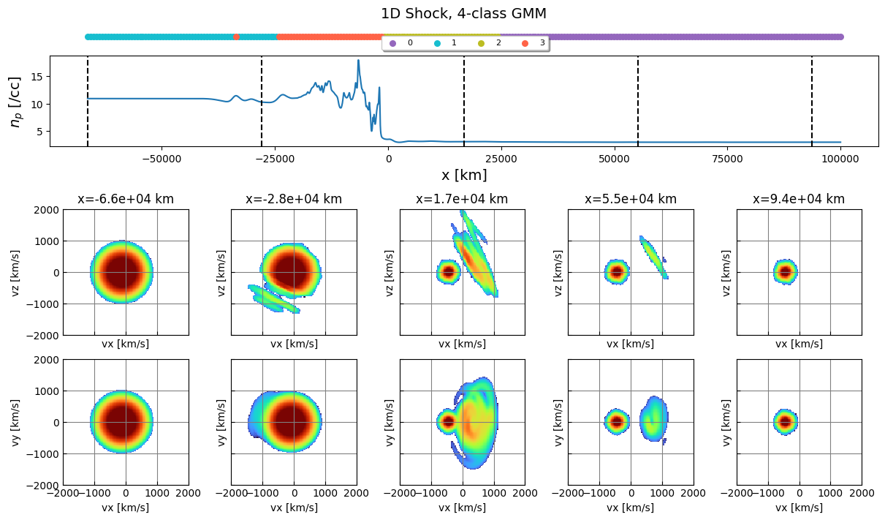

Loading Vlasiator Data Into VDFpy
import requests
import os.path
file = "parallel_shock_1d_t100s.vlsv"
if not os.path.isfile(file):
url = f"https://raw.githubusercontent.com/henry2004y/vlsv_data/master/{file}"
testfiles = url.rsplit("/", 1)[1]
r = requests.get(url, allow_redirects=True)
open(testfiles, "wb").write(r.content)
Vlasiator works in the phase space directly, therefore, there is no concept of particles. Here we are collecting the moments computed from integrals of the phase space and performing the clustering.
import vdfpy
from pyvlasiator.vlsv import Vlsv
import pyvlasiator.plot
import matplotlib.pyplot as plt
import numpy as np
ds = Vlsv(file)
df = vdfpy.collect_moments(file)
method = "GMM"
labels = vdfpy.cluster(df, n_clusters=4, method=method)
labels = labels[::20]
xrange = np.linspace(ds.coordmin[0]+1, ds.coordmax[0]-1, labels.size)
ylocs = np.zeros(labels.size)
fig, ax = plt.subplots(figsize=(10, 2), layout="constrained")
for g in np.unique(labels):
ix = np.where(labels == g)
ax.scatter(xrange[ix], ylocs[ix], label=g, s=30)
ax.get_yaxis().set_visible(False)
ax.legend(loc="upper center", fancybox=True, shadow=True, ncol=4, fontsize=16)
ax.set_title("1D Shock, 4-class GMM", fontsize=14)
plt.show()
# clusters: 4; # samples: 5200; # features: 3
import matplotlib as mpl
from cycler import cycler
custom_cycler = (cycler(color=["tab:purple","tab:cyan","tab:olive","tomato"]))
# Create a figure with two subfigures
fig = plt.figure(figsize=(12, 7), layout="constrained")
subfigs = fig.subfigures(2, 1, wspace=0.02, height_ratios=[1, 1.8])
axsTop = subfigs[0].subplots(2, 1, sharex=True, height_ratios=[1, 3.5])
axsTop[0].set_prop_cycle(custom_cycler)
xrange = np.linspace(ds.coordmin[0]*1e-3+1, ds.coordmax[0]*1e-3-1, labels.size)
for g in np.unique(labels):
ix = np.where(labels == g)
yloc = np.zeros_like(ix)
axsTop[0].scatter(xrange[ix], yloc, label=g, s=30)
axsTop[0].legend(loc=(0.4, 0.0), fancybox=True, shadow=True, ncol=4, fontsize=8)
axsTop[0].set_title("1D Shock, 4-class GMM", fontsize=14)
axsTop[0].axis("off")
x = np.linspace(ds.coordmin[0] * 1e-3, ds.coordmax[0] * 1e-3, ds.ncells[0])
w = ds.read_variable("proton/vg_rho") * 1e-6
axsTop[1].plot(x, w)
axsTop[1].set_xlabel("x [km]", fontsize=14)
axsTop[1].set_ylabel(r"$n_p$ [/cc]", fontsize=14)
nVDF = 5
vdfrange = [[-2000, 2000], [-2000, 2000]]
xrange = np.linspace(ds.coordmin[0]+1, ds.coordmax[0]-1, nVDF)
cmap = mpl.colormaps["turbo"] # pyvlasiator 0.1.4
axsBot = subfigs[1].subplots(2, nVDF, sharex=True, sharey=True)
for i in range(nVDF):
ax1 = axsBot[0,i]
ax2 = axsBot[1,i]
loc = (xrange[i], 0, 0)
ds.vdfslice(loc, ax=ax1, range=vdfrange, addcolorbar=False, cmap=cmap)
ds.vdfslice(loc, ax=ax2, range=vdfrange, addcolorbar=False, slicetype="xy", cmap=cmap)
cidReq = ds.getcell(loc)
cidNearest = ds.getnearestcellwithvdf(cidReq)
l = ds.getcellcoordinates(cidNearest) * 1e-3
ax1.set_xlim(vdfrange[0])
ax1.set_ylim(vdfrange[1])
ax2.set_xlim(vdfrange[0])
ax2.set_ylim(vdfrange[1])
ax1.set_title(f"x={l[0]:.1e} km")
ax2.set_title("")
axsTop[1].axvline(l[0], color="k", linestyle="--")
plt.show()
